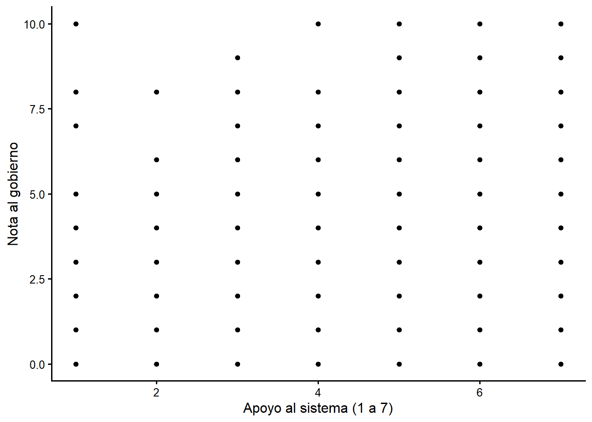
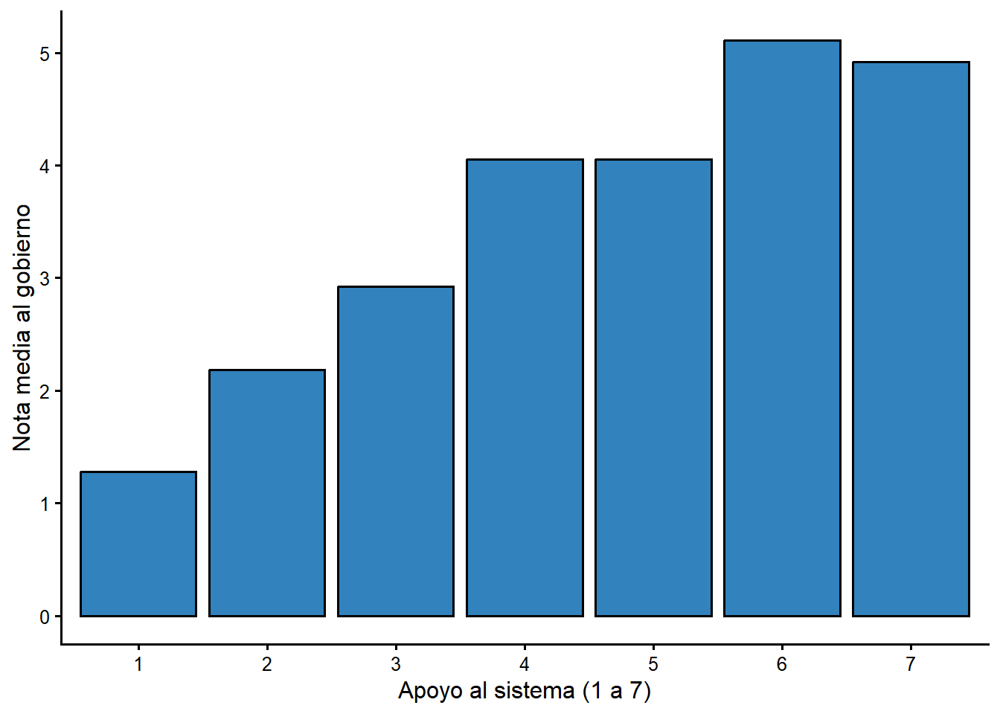
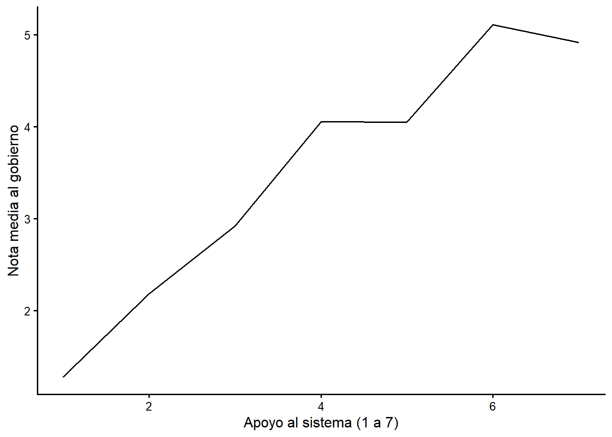
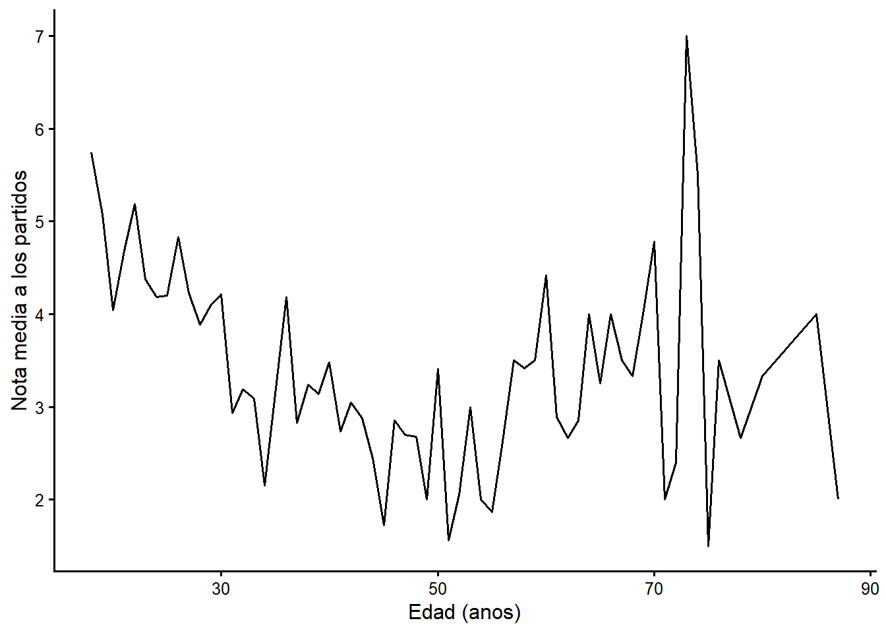
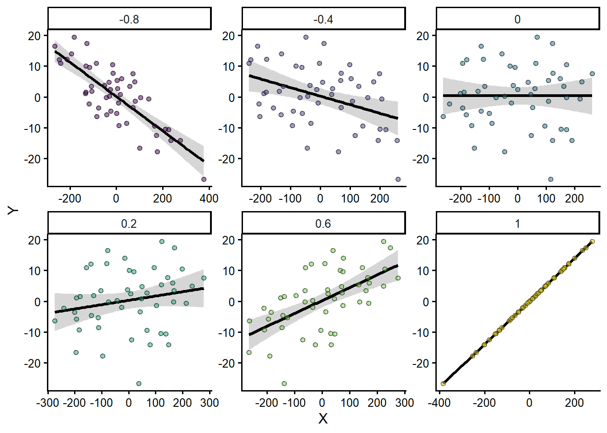

Capitulo 3 Introduccion a las medidas de asociacion: la correlacion
Muchas preguntas de investigacion en disciplinas muy distintas se centran en una pregunta simple: si comparas a los miembros de dos grupos, ¿como difiere la media de alguna variable de interes? En medicina, ¿en que difiere el grupo tratado del grupo de control? ¿Cual es el efecto promedio del tratamiento? En politicas publicas, ¿que ocurre con las personas que participan en un programa de gobierno frente a quienes no participan? En la investigacion social, ¿que ocurre cuando estas expuesto a mas noticias o a un entorno social mas diverso?
Hay dos enfoques principales para atacar este tipo de pregunta: observar o experimentar. Los experimentos son muy superiores a la observacion, y usamos evidencia experimental particularmente rigurosa, por ejemplo, en el proceso de aprobacion de medicamentos. La investigacion medica suele basarse en ensayos aleatorizados doble ciego: un experimento en el que a las personas se les asigna al azar un tratamiento o un placebo, y ni quien investiga ni quien participa sabe quien recibe cual. Lo unico que difiere entre el grupo de control y el grupo tratado es la exposicion al tratamiento; los grupos no varian en nada mas. Esta estrategia aisla el efecto del tratamiento de cualquier otra variable.
La segunda mejor alternativa (y la estrategia de este curso) es la observacion. Observamos a personas agrupadas por alguna caracteristica (no asignada al azar) e intentamos usar la estadistica para aislar el efecto de esa caracteristica. En tu primera tarea quizas comparaste el apoyo al sistema de personas jovenes y mayores. Pero en Costa Rica la demografia y la geografia de un grupo de personas mayores probablemente difieren bastante de las de un grupo de personas jovenes. Las personas mayores tienen, en promedio, un nivel educativo menor y viven mas en ciertas provincias. Asi que una estrategia observacional no nos permite aislar con precision el efecto solo de la edad.
Despues de repasar algunas caracteristicas clave de los disenos experimentales, pasaremos a las formas en que usamos la estadistica para implementar una estrategia observacional.
3.2 Enfoques observacionales: ¿que opciones tenemos?
¿Como comparamos dos grupos si no podemos hacer un experimento? En la primera tarea comparaste el apoyo de dos grupos. Tu estrategia fue comparar unas pocas estadisticas descriptivas clave y reportar unos pocos porcentajes que resumieran las diferencias. Usaste una distribucion de frecuencias para producir los porcentajes: esto se conoce como tabla de “una via”. Tambien podemos usar figuras y tablas de dos vias para resumir el mismo tipo de informacion.
3.2.1 Tablas
Si quieres comparar los valores de alguna variable de interes (el voto por el PAC) entre los niveles de otra variable (educacion, provincia, sexo), podemos producir una tabla con los mismos tipos de porcentajes que vimos en la tabla de frecuencias. Esto se conoce como tabulacion cruzada, y la tabla de dos variables se conoce como tabla de contingencia o cross-tab. Por ahora ignoraremos el problema de que agrupar por una variable predictora no crea grupos aleatorios; volveremos a eso mas adelante.
3.2.1.1 Ejemplo: voto por el PAC y provincia
¿Como esperarias que cambie el voto por el PAC segun la provincia? La encuesta del CIEP clasifica la provincia en dos categorias: provincia costera y provincia central. Una forma empirica de responder la pregunta es construir una tabla de contingencia entre provincia y voto por el PAC.
Tabla 3.1 Voto por el PAC y provincia, encuesta CIEP 2020
tabla31 <- round(100 * prop.table(table(ciep$votopac_f, ciep$prov_f), margin = 2), 1)
kable(tabla31, digits = 1,
caption = "Porcentajes por columna. Fuente: CIEP-UCR, noviembre 2020.")| Provincia costera | Provincia central | |
|---|---|---|
| No voto PAC | 68.8 | 48 |
| Voto PAC | 31.2 | 52 |
¿Es esto consistente con tus expectativas? Es claro que la probabilidad de votar por el PAC es mucho mayor en la provincia central (52,0 %) que en las provincias costeras (31,2 %). La diferencia regional es considerable. En los capitulos siguientes veremos si esa diferencia sobrevive cuando controlamos por otras caracteristicas, como el nivel educativo.
3.2.2 Figuras
En muchos casos es mas util producir una figura que una tabla.
¿Que pasa si la tabla implicaria un numero muy grande de celdas? En el ejemplo anterior, 2 categorias de voto por 2 provincias implican 4 celdas: un numero manejable. Pero si usaramos una variable con muchos niveles, la tabla se volveria inmanejable. Veamos un ejemplo con una variable continua.
3.2.2.1 Ejemplo: la evaluacion del gobierno y el apoyo al sistema
Antes de volver a los datos de voto, consideremos un ejemplo que introduce las escalas de evaluacion de la encuesta del CIEP. La encuesta pide a las personas poner una nota de 0 a 10 a varias instituciones: la Asamblea Legislativa, la Defensoria de los Habitantes, el gobierno, el Organismo de Investigacion Judicial, los partidos politicos, el Poder Judicial, la Sala Constitucional, la Universidad de Costa Rica y las otras universidades publicas. Una nota de 0 significa “muy mal” y una de 10, “muy bien”.
¿Como se relacionan las actitudes hacia el gobierno con el apoyo al sistema
politico (b6, de 1 a 7)? ¿Que tan diferentes son las personas que apoyan poco
al sistema de las que lo apoyan mucho?
Hay tres estrategias de visualizacion para resumir el vinculo entre estas variables: un diagrama de dispersion, un grafico de barras de medias de grupo o un grafico de lineas de medias de grupo. En cada figura, el eje vertical representa lo que tratamos de explicar (la variable dependiente, Y) y el eje horizontal representa el predictor (la variable independiente, X).
Figura 3.1 Diagrama de dispersion. Nota al gobierno y apoyo al sistema

Figura 3.1. Diagrama de dispersion: nota al gobierno y apoyo al sistema
La primera figura (el diagrama de dispersion) no es muy util: con cientos de personas y pocos valores posibles, terminamos con una rejilla de puntos. Esto ocurre con cualquier encuesta que tenga un numero finito y pequeno de respuestas posibles y muchas personas participantes.
Las figuras segunda y tercera, mas abajo, lo dejan mucho mas claro. Hay un aumento marcado en la nota al gobierno a medida que aumenta el apoyo al sistema.
Figura 3.2 Grafico de barras de medias de grupo. Nota al gobierno y apoyo al sistema

Figura 3.2. Grafico de barras: media de la nota al gobierno por nivel de apoyo al sistema
Figura 3.3 Grafico de lineas. Nota al gobierno y apoyo al sistema

Figura 3.3. Grafico de lineas: media de la nota al gobierno por nivel de apoyo al sistema
3.2.3 La edad y la evaluacion de los partidos, revisitada
Usamos una tabla para describir el vinculo entre el voto y la provincia. Tambien podemos usar una variable mas fina, como la edad. La Figura 3.4, un grafico de lineas de la nota media a los partidos politicos segun la edad, sugiere que hay una relacion negativa pero muy debil (“ruidosa”) entre la edad y la evaluacion de los partidos: las personas mayores tienden a calificar un poco peor a los partidos.
Figura 3.4 Edad y evaluacion de los partidos politicos

Figura 3.4. Edad y nota media a los partidos politicos
La relacion es “ruidosa”: la linea no sube ni baja de forma ordenada en todos los valores de edad. La correlacion entre la edad y la nota a los partidos es apenas -0,22, lo que confirma que el vinculo es debil.
3.3 ¿Por que usar estadistica si podemos resumir con figuras?
¿Por que usar estadistica? La respuesta simple: porque usamos una muestra pequena.
¿Como sabemos si la relacion observada en la muestra (mas apoyo al gobierno a medida que aumenta el apoyo al sistema) tambien se observa en la poblacion mas amplia? Usamos estadistica, en concreto un grupo de estadisticos de prueba conocidos como medidas de asociacion, para hacer una inferencia sobre la relacion en la poblacion. Una de estas medidas, la correlacion, se introduce brevemente abajo; las otras dos se desarrollan en los capitulos 4 y 5.
La inferencia es aprender sobre algo que no podemos observar a partir de algo que si podemos observar. Podemos observar muestras pequenas; a menudo no podemos observar ni medir poblaciones completas, porque es demasiado caro y poco practico.
La clave de esta forma de inferencia es que las muestras deben ser aleatorias. Cualquier persona de la poblacion debe tener la misma probabilidad de aparecer en la muestra. Hoy es mas dificil alcanzar al electorado por telefono, y las encuestas presenciales como la del CIEP enfrentan el sesgo de no respuesta: las personas dispuestas a participar en una encuesta pueden ser distintas de quienes no participan. Eso podria alejar a la muestra de ser un corte verdaderamente aleatorio de la poblacion.
3.4 ¿Que son las medidas de asociacion?
Si tenemos una muestra aleatoria de una poblacion mas amplia, podemos usar medidas de asociacion para describir relaciones entre variables. En el lexico de la ciencia de datos, la variable que nos interesa se conoce como variable dependiente (\(Y\)) y la variable predictora como variable independiente (\(X\)). Suponemos que \(X\) influye en \(Y\), o que \(Y\) es funcion de \(X\).
Usamos medidas de asociacion para responder tres preguntas: ¿cual es la direccion de la relacion?, ¿cual es el tamano del efecto? y ¿es el efecto en la muestra estadisticamente significativo?
- Direccion. ¿Un aumento en \(X\) aumenta (+) o disminuye (-) \(Y\)?
- Tamano. ¿\(X\) tiene un impacto grande o pequeno sobre \(Y\)?
- Significancia estadistica. ¿El efecto observado podria deberse al azar?
Nos centraremos en el tamano y la direccion al aprender la correlacion, y pasaremos al concepto de significancia estadistica en el capitulo 5.
Recordemos los tipos de variables. Distinguimos entre variables categoricas (las personas se agrupan en categorias que no se pueden ordenar: provincia, religion, estado civil), ordinales (categorias que se pueden ordenar: apoyo al sistema, ideologia) y de intervalo (categorias ordenadas en una escala con intervalos iguales: edad, anos de educacion).
Para este curso vemos tres medidas de asociacion: chi-cuadrado, correlacion y prueba t. La eleccion depende de los tipos de variables:
- Si \(X\) y \(Y\) son ambas de intervalo u ordinales, corresponde usar correlacion.
- Si \(X\) y \(Y\) son ambas categoricas, solo corresponde usar chi-cuadrado.
- Si \(Y\) es de intervalo u ordinal y \(X\) es categorica con solo dos categorias, usamos la prueba t.
La logica detras de cada medida es la misma: ¿es la media de una variable (\(Y\)) distinta en distintos valores de \(X\)? Primero formulamos una teoria sobre lo que esperamos y luego la contrastamos con los datos.
3.5 Correlacion
En muchas situaciones de investigacion las variables de interes son ambas algun tipo de escala, ya sea de intervalo u ordinal. Esto incluye medidas concretas como el ingreso, los anos de educacion o la edad, y conceptos que ordenamos de forma significativa, como la ideologia o una escala de apoyo (de 1 a 7). Si te interesa determinar la relacion entre dos variables que son escalas, debes calcular y usar el coeficiente de correlacion.
3.5.1 ¿Que es la correlacion?
La correlacion es una medida de asociacion apropiada para variables de nivel de intervalo (y puede aplicarse a variables ordinales que son “aproximadamente de intervalo”, por ejemplo el apoyo al sistema o la ideologia). El estadistico va de -1 a +1 y ofrece un resumen en un solo numero de la direccion y el tamano de la relacion entre \(X\) y \(Y\).
Si dos variables tienen una correlacion de +1 o -1, estan perfectamente correlacionadas. Si la correlacion es mayor que 0, las variables se describen como positivamente relacionadas. Si es menor que 0, se describen como negativamente relacionadas. A medida que la correlacion se aleja de cero (mas cerca de +1 o -1), mas fuerte es el vinculo. Una correlacion de cero es una relacion nula. Negativo no significa nulo: nulo es cero.
Figura 3.5 Efectos positivos, negativos y nulos

Figura 3.5. Ejemplos de correlacion positiva, negativa y nula
Puedes describir tus expectativas con estos numeros. Por ejemplo, esperarias que, a mayor nivel educativo, mayor fuera la valoracion de las universidades publicas. Esperarias una correlacion positiva entre la educacion y la nota a la universidad.
3.5.2 Calculo
El calculo del coeficiente de correlacion requiere la covarianza de dos variables y la desviacion estandar de cada una.
Recuerda que la desviacion estandar \(\sigma\) es simplemente la raiz cuadrada de la varianza muestral:
\[ \sigma_x = \sqrt{\frac{\sum_{i=1}^n (X_i - \mu)^2}{n-1}}\]
Comparamos cada valor individual de \(X\) con la media del grupo. Si muchas personas estan por encima o por debajo de la media, la varianza y la desviacion estandar son altas. Si muchas estan cerca de la media, son bajas.
El componente basico de la correlacion es la covarianza, que sigue la misma logica que la varianza. Comparamos cada valor de \(X\) con la media de \(X\) y lo multiplicamos por el valor de \(Y\) de esa misma persona menos la media de \(Y\). Si las personas con valores altos de una variable tambien tienen valores altos de la otra, la covarianza es positiva.
En simbolos, la covarianza es:
\[ cov(X,Y)= \frac{\sum_{i=1}^n (X_i - \mu_x)(Y_i - \mu_y)}{n-1} \]
Una vez conocida la covarianza y la desviacion estandar de cada variable, podemos calcular la correlacion. El coeficiente de correlacion muestral (\(\rho\)) es la covarianza entre \(X\) y \(Y\) dividida entre la desviacion estandar de \(X\) y la de \(Y\). En simbolos:
\[ \rho=\frac{cov(X,Y)} {\sigma_x\sigma_y} \]
Este numero nunca puede ser mayor que 1,0 ni menor que -1,0. Cuanto mas lejos de cero, mayor el efecto de \(X\) sobre \(Y\).
3.5.3 Tres limites importantes del coeficiente de correlacion
3.5.3.1 La correlacion es mas util como medida relativa
Primero, la correlacion se usa mejor como descripcion de la direccion y el tamano relativo de la relacion (una correlacion de 0,8 es mas fuerte que una de 0,5). Es menos util como medida absoluta: una correlacion de 0,5, sin conocer el tipo de datos, las variables u otras correlaciones de la muestra, no dice mucho por si sola.
3.5.3.2 La correlacion supone una relacion lineal
Segundo, las afirmaciones sobre correlacion suponen que la relacion entre dos variables es lineal (o aproximadamente lineal). Las relaciones no lineales pueden no reflejarse en la correlacion.
Por ejemplo, no podriamos capturar bien el vinculo entre el apoyo al sistema y la nota al gobierno si la relacion tuviera forma de U. Cuando la relacion es de ese tipo, la correlacion puede subestimar el vinculo real.
3.5.3.3 La correlacion no sirve para categorias arbitrarias
Finalmente, nunca uses la correlacion si las variables no son escalas. Tenemos variables que son simplemente categorias: provincia, estado civil, ocupacion. Usamos un numero para ubicar a las personas en categorias, pero el numero es arbitrario. Por ejemplo, si codificamos provincia costera = 0 y central = 1, la “distancia” entre esas categorias no tiene sentido. Cada vez que el orden de las categorias es arbitrario, no debes usar correlacion, porque seria enganosa.
3.5.4 Leer una matriz de correlacion
La mayoria de los programas estadisticos producen las correlaciones en forma de matriz. La Tabla 3.2 reproduce la salida que resume el vinculo entre la nota al gobierno y la nota a los partidos politicos. Por ahora solo necesitamos fijarnos en un numero, la correlacion de Pearson.
Tabla 3.2 Correlacion entre la nota al gobierno y la nota a los partidos
nota_gob nota_pp
nota_gob 1.000 0.522
nota_pp 0.522 1.000La correlacion entre la nota al gobierno y la nota a los partidos es 0,522. Podemos aprender dos cosas. Primero, el vinculo es positivo: quienes mejor califican al gobierno tambien tienden a calificar mejor a los partidos. Segundo, el vinculo no es perfecto: hay personas que califican bien a uno y mal al otro.
Nota que la forma mas util de usar la correlacion es comparar las correlaciones entre dos pares de variables del mismo conjunto de datos. La Tabla 3.3 trata la nota al gobierno como variable dependiente \(Y\) y contrasta el vinculo con varios predictores.
Tabla 3.3 Matriz de correlacion: apoyo al sistema, notas a instituciones, educacion y edad
Apoyo al sistema Nota al gobierno Nota a partidos
Apoyo al sistema 1.000 0.408 0.308
Nota al gobierno 0.408 1.000 0.529
Nota a partidos 0.308 0.529 1.000
Nota a la UCR 0.176 0.214 0.196
Educacion 0.041 0.100 0.031
Edad 0.082 -0.056 -0.217
Nota a la UCR Educacion Edad
Apoyo al sistema 0.176 0.041 0.082
Nota al gobierno 0.214 0.100 -0.056
Nota a partidos 0.196 0.031 -0.217
Nota a la UCR 1.000 -0.044 -0.100
Educacion -0.044 1.000 -0.120
Edad -0.100 -0.120 1.000Esta salida es una matriz de correlacion: puedes ver todas las correlaciones en una sola tabla. En esta muestra, la correlacion entre el apoyo al sistema y la nota al gobierno es 0,408; la correlacion entre la nota al gobierno y la nota a los partidos es 0,529. El apoyo al sistema es un buen predictor de la nota al gobierno, pero la evaluacion de los partidos lo es aun mas. La correlacion entre la educacion y las notas es cercana a cero (por ejemplo, educacion y nota a la UCR = -0,044), lo que indica que el nivel educativo no predice la valoracion de las instituciones. La edad tiene una correlacion negativa debil con la nota a los partidos (-0,217): las personas mayores califican un poco peor a los partidos.
3.6 Conclusion
Mientras que las figuras y tablas son utiles para comunicar lo que vemos o aprendemos de los datos, las medidas de asociacion nos dan dos formas de aprovechar la informacion. Primero, podemos comparar mejor el tamano de dos efectos con un numero que con una figura o tabla. Segundo, y este es el foco del siguiente capitulo, podemos ser precisos sobre lo que podemos inferir de la poblacion a partir de nuestra muestra. La correlacion es una forma especialmente simple y util de resumir la direccion y el tamano relativo del vinculo entre variables ordenadas de forma significativa.